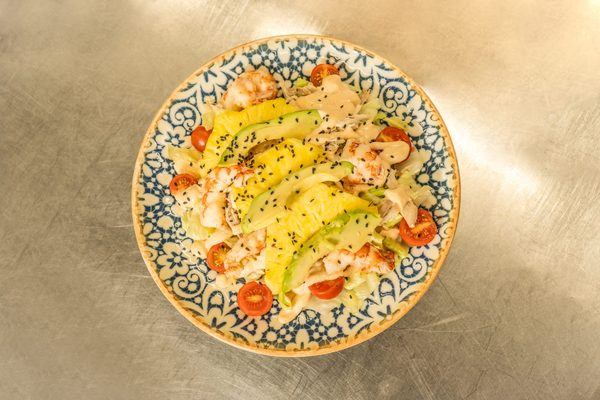
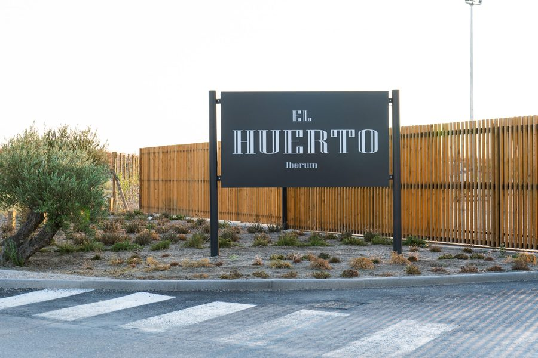
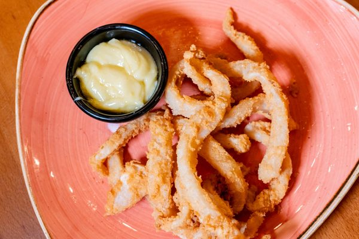
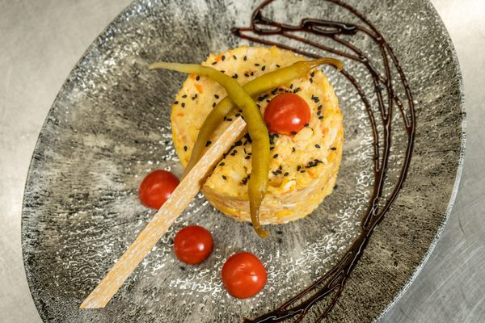

Ensalada de la casa
Con aguacate, gambas y fruta de temporada. Fresca y abundante.
Illescas · Avenida Hontalva
Restaurante, bar y cafetería en Illescas. Desayunos desde las siete de la mañana, menú del día, cenas y tardeo con música en directo los fines de semana.
El sitio
El Huerto Iberum está en la avenida Hontalva, en la zona de la Sagra, junto al Hotel Iberum. Es un local moderno con una zona exterior amplia y cubierta, con estufas para el frío, la parte que más gusta a quien viene.
Por la mañana es cafetería y desayuno. A mediodía, menú del día para los almuerzos de trabajo. Por la tarde, sobremesa tranquila. Y de jueves a sábado, tardeo con música en directo y ambiente hasta la medianoche.

La entrada, en la avenida Hontalva.
La comida
Cocina casera con toque moderno, raciones generosas y precios que no asustan. Esto es lo que más se repite en las reseñas de quien ya ha venido.

Con aguacate, gambas y fruta de temporada. Fresca y abundante.

Dorados por fuera, tiernos por dentro. De los que se piden para compartir.

Con sésamo, guindilla y un toque de balsámico. Uno de los entrantes de la casa.
Y de la carta
Ensalada César, costillas, torrezno y huevos con chistorra. Platos bien elaborados, sabrosos y con buena cantidad, como dice quien los ha probado.
Terraza y tardeo
La terraza cubierta se llena a la caída de la tarde. Estufas encendidas en invierno, música en directo y ambiente hasta medianoche. También acogemos los afterworks de empresas de la zona.
Reservar para el tardeoOpiniones
Reseñas reales publicadas en Google.
Restaurante perfecto para comer, cenar o tardeo. Tiene una zona amplia exterior cubierta y con estufas, que es idónea para tomarse algo escuchando música en directo. La comida está bastante bien, muy buena y raciones muy generosas.
Juan Bravo
El espacio es ideal, especialmente la parte exterior. Con buen tiempo, la terraza es perfecta para disfrutar sin prisas. Pedimos ensalada César, costillas, torrezno y huevos con chistorra, y todo estaba realmente bueno. Los precios son acordes a la calidad y a las raciones.
Vanessa Plaza
Muy buena calidad, muy recomendable.
Aaron Gómez
Muy rico todo. Muy tranquilo y agradable.
Lydia Gómez
Dónde estamos
Estamos en la avenida Hontalva, junto al Hotel Iberum, en la zona de expansión de Illescas. Fácil de encontrar y con aparcamiento propio para no dar vueltas.